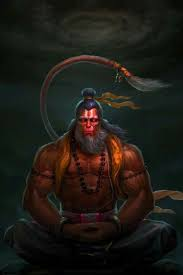
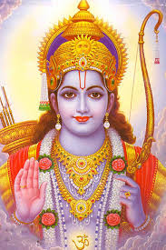
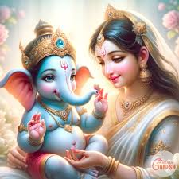

Hanuman (/ˈhʌnʊˌmɑːn/; Sanskrit: हनुमान्, IAST: Hanumān),[5] also known as Maruti, Bajrangabali, and Anjaneya,[6] is a deity in Hinduism, revered as a divine vanara, and a devoted companion of the deity Rama. Central to the Ramayana, Hanuman is celebrated for his unwavering devotion to Rama and is considered a chiranjivi. He is traditionally believed to be the spiritual offspring of the wind deity Vayu, who is said to have played a significant role in his birth.[7][8] In Shaiva tradition, he is regarded to be an incarnation of Shiva, while in most of the Vaishnava traditions he is the son and incarnation of Vayu. His tales are recounted not only in the Ramayana but also in the Mahabharata and various Puranas.

Rama (/ˈrɑːmə/;[4] Sanskrit: राम, IAST: Rāma, Sanskrit: [ˈraːmɐ] ⓘ) is a major deity in Hinduism. He is the seventh and one of the most popular avatars of Vishnu. In Rama-centric traditions of Hinduism, he is considered the Supreme Being.[5]

Ganesha (Sanskrit: गणेश, IAST: Gaṇeśa), also spelled Ganesh, and also known as Ganapati, Vinayaka, Lambodara and Pillaiyar, is one of the best-known and most worshipped deities in the Hindu pantheon[4] and is the Supreme God in the Ganapatya sect. His depictions are found throughout India.[5] Hindu denominations worship him regardless of affiliations.[6] Devotion to Ganesha is widely diffused and extends to Jains and Buddhists and beyond India
